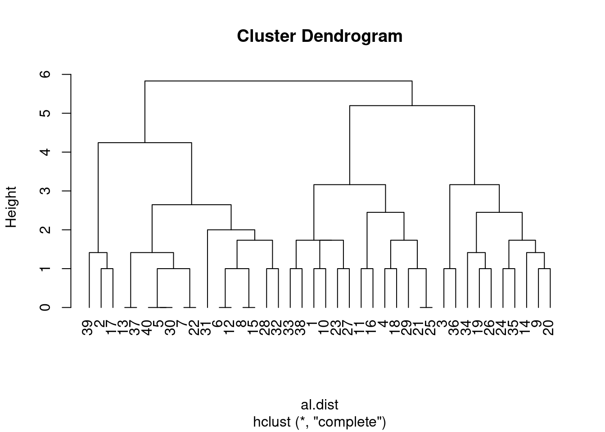
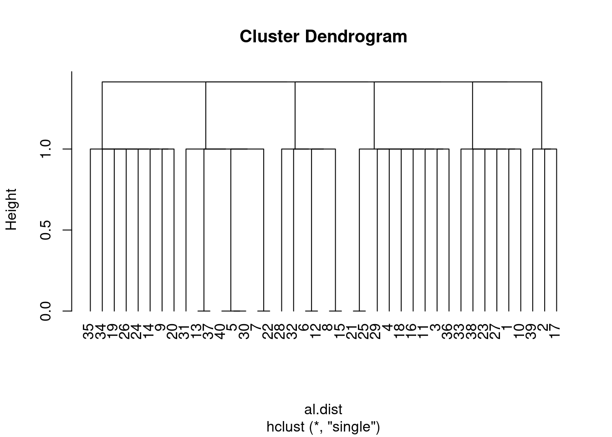
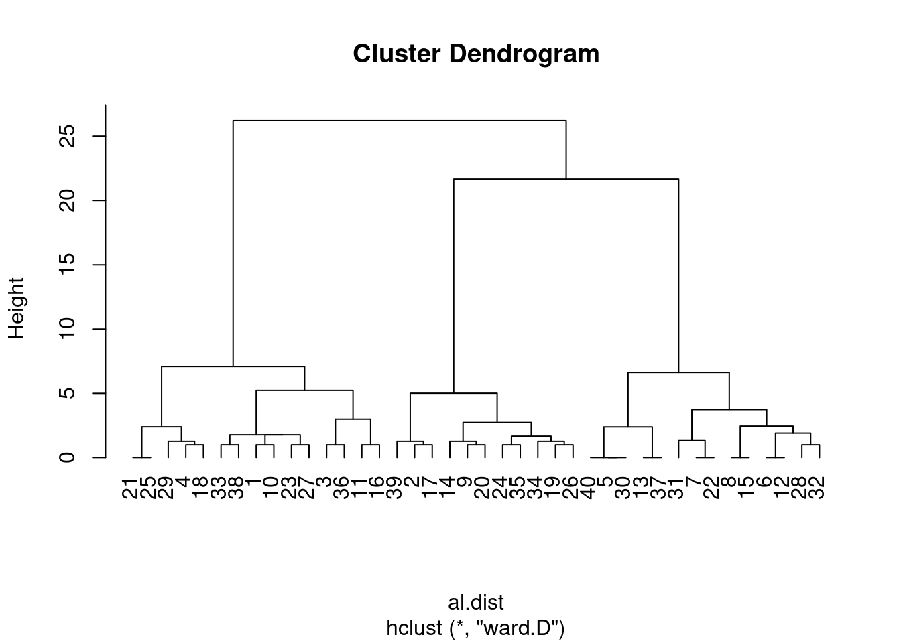
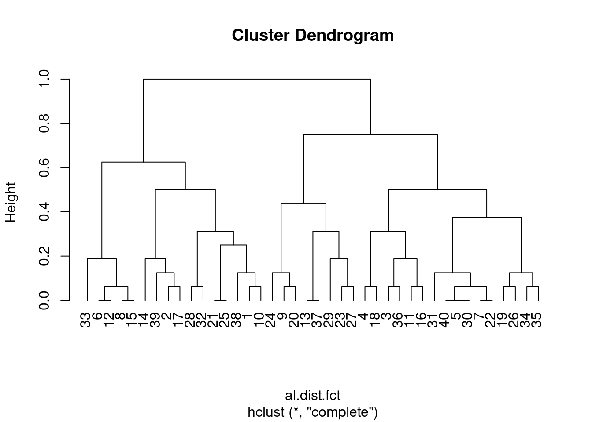
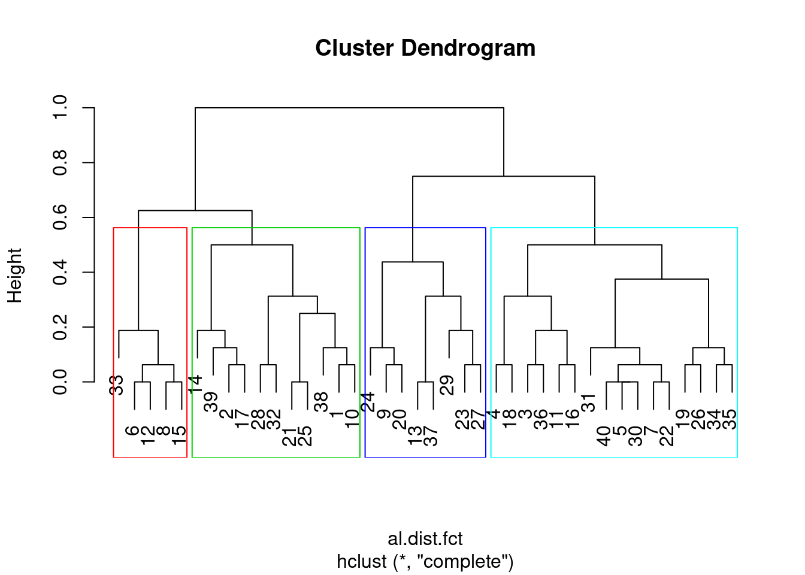
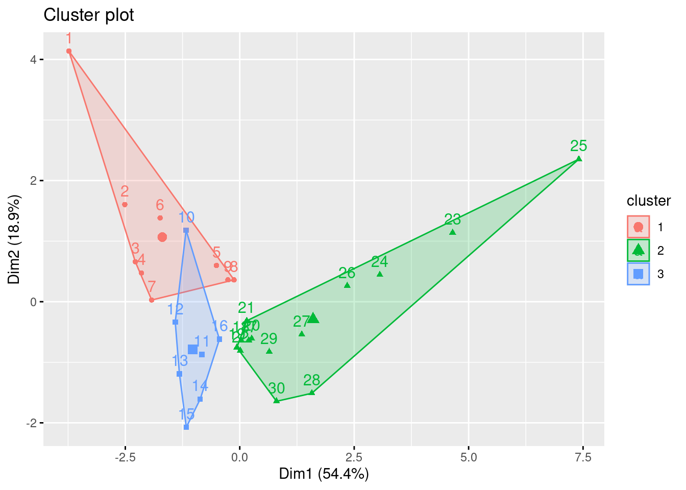
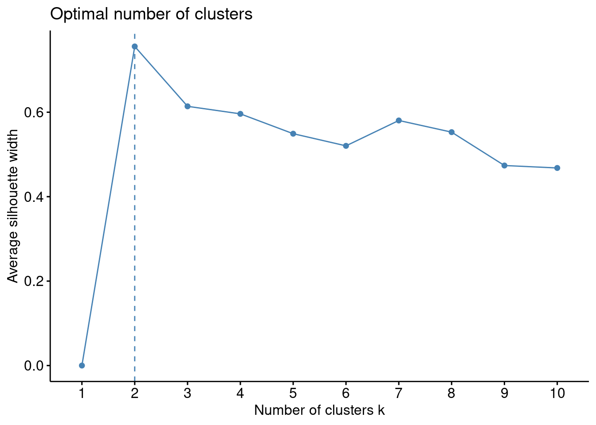
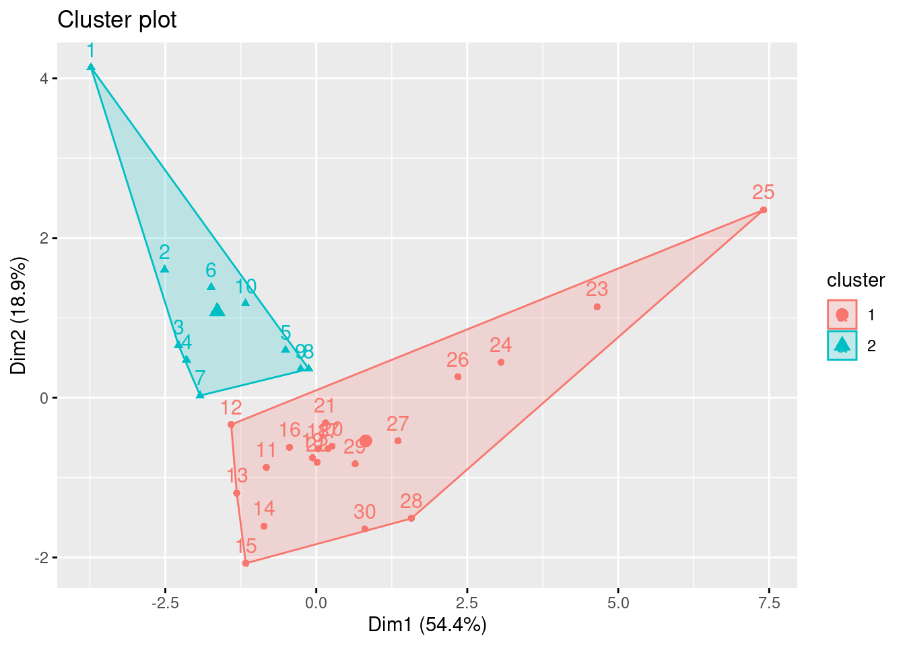

Análise de Clusters
Felipe Melo
03/04/2021
Análise de Clusters
Slides

Segundo os autores do livro Numerical Ecology, a interpretação de um dendograma típíco das análises de cluster, demanda um certo grau de abstração, vejamos. Um cluster serve para particionar (i.e. criar fornteiras) conjuntos de objetos (Q mode) ou variáveis (R-mode). Dessa forma, podemos identificar o grau de semelhança (ou diferença) entre sujeitos analisados. Para isso, a análise cria uma tipologia, que é uma estrutura completa e complexa, na forma de uma árvore ou nuvem de pontos que informa sobre essa semelhança/diferença. A Wikipedia tem um verbete interssante sobre isso e vou deuxar aqui alguns tutoriais em R paa vocês reprodizirem.
O pulo do gato

Se você juntar qualquer conjunto de dados, de qualquer natureza, uma análise de cluster vai gerar uma estrutura que vai parecer uma coisa que têm sentido ou até impressionar seus colegas que dirão: UAU!!!
O “pulo do gato” se refere ao uso da análise cluster associado a uma *HIPÓTESE". Você precisa pensar sobre seus dados ecológicos, que geralmente são frutos de um desenho amostral guiado por uma pergunta científica. Prestem atenção no último exercício, da última aula, onde mostrei pra vocês como, à partir de uma pergunta sobre a semelhança entre as comunidades do alto, média e baixo rio, testei através de uma análise de cluster, se minha hipóitese tinha sentido. E tinha, de certa forma, mas comunidades dessas três seções do rio, são mais parecidas entre si que entre elas e outras comunidades de outras partes do rio. Mostrei isso colorindo minhas comunidades e organizando-as num cluster.
Nota de precaução, e aqui vou citar literalmente o Numerical Ecology with R: “Clustering is not a typical statistical method in that it does not test any hypothesis. Clustering helps bring out some features hidden in the data; it is the user who decides if these structures are interesting and worth interpreting in ecological terms.” (p. 54)
Ou seja, o ordenamento via cluster não é um teste de hipótese mas uma ferramenta para explorar estruturas “ocultas” nos dados, e somos nós pesquisadores, que decidimos se elas têm algum valor ecológico. Lembrem-se, qualquer dados de qalquer natureza, vai ser agrupado numa estrutura qualquer. Nós é que precisamos dar sentido à elas.
Exemplo 1
Imagine-se na sua turma da escola, com 40 alunos. Um professor de biologia pediu quefosse formados 5 grupos para a realização de um trabalho sobre a vida na Terra. Os grupos são livres, cada um fica com as companhias e o tema que desejar. Cada grupo tem que fazer um trabalho sobre um dos reinos: animal, vegetal, fungi, protista e monera. A pergunta é: Como se agrupariam os alunos? Quais seriam so critérios que vocÊ imaginaria? Eu, se me lembro bem, pois faz tempo… pensaria:
Vou fiar com meus amigos/amigas
Vou ficar com o tema que gosto mais
Não posso ficar só com a turma da bagunça
Quero ficar no grupo daquela “boyzinha/boyzinho”
Então, é muito provável que um professor atento à sua turma consiga prever quase com perfeição, como será a composição dos grupos. Mas nunca 100%, tem sempre um erro associado que bagunça a estrutura esperada.
set.seed(999) # vai gerar sempre o mesmo resultado com as funções abaixo
tibble(
aluno = paste0("aluno", 1:40), # 40 alunos
amizade = sample(c(1:5), replace=TRUE, size=40), # grupo de amigos ao qual pertence. aqui separei em 5 grupos
tema = sample(c(1:5), replace=TRUE, size=40),# um dos cinco reinos, sendo 1=planta; 2=animal; 3=fungi;4=protista;5=monera
bagunca = sample(c(0:1), replace=TRUE, size=40),# ou se é bagunceiro =1 ou não é bagunceiro = 0
love = sample(c(0:1), replace=TRUE, size=40) # seu love tá lá = 1 ou não está =0
)-> aula
aula## # A tibble: 40 x 5
## aluno amizade tema bagunca love
## <chr> <int> <int> <int> <int>
## 1 aluno1 3 2 0 0
## 2 aluno2 4 5 0 0
## 3 aluno3 5 1 1 1
## 4 aluno4 1 2 1 1
## 5 aluno5 1 5 1 1
## 6 aluno6 2 4 1 0
## 7 aluno7 2 5 1 1
## 8 aluno8 3 4 1 0
## 9 aluno9 5 2 0 1
## 10 aluno10 3 3 0 0
## # … with 30 more rowsVamos criar uma matriz de similaridade. Nesse caso, temos variaǘeis cujos zeros são importantes (lembram?) e portanto devemos usar alguma medida de distância que seja sensível a isso. Vamos testar com a distância euclidiana mesmo.
al.dist<-vegdist(aula[,-1],method = "euclidean") # retirei a coluna dos nomes dos alunosAgora é só graficar…
clust_alun.comp<-hclust(al.dist, method = "complete")
clust_graf_alun.com<-plot(clust_alun.comp, hang=-1)
Mas, diante dessa estrutura, qual é a informação que você extrai? Sem uma hipotese, não tem muito o que fazer a não ser observar a distribuição dos 40 alunos nos grupos e ficar pensando o que eles têm em comum e talvez, num segundo momento, pensar numa hipotese.
Alguns princípios
Escolha o método de agrupamento
No exemplo acima, é possível notar que usei o método “complete”, mas existem outos, que dão resultados diferentes. Vejamos:
Parece que ainda menos informçaõ foi gerada.
clust_alun<-hclust(al.dist, method = "single")
clust_graf_alun<-plot(clust_alun, hang=-1)
E se testarmos outros metodos, como “Ward”?
Parecem consguir agrupar tão bem quanto o “complete”
clust_alun<-hclust(al.dist, method = "ward.D")
clust_graf_alun<-plot(clust_alun, hang=-1)
Aqui Tem uma apresentção bem resumidinha sobre os métodos de agrupamento de cluster, feita por Marcelo Lauretto da USP
Escolha o método de distância a ser usado
Os métodos de distância são os mais usados para dados numéricos, mas sofrem quando os dados são categóricos, mesmo quando esses são representados por zeros e uns. Qual a distância entre ser “bagunceiro” e “não-bagunceiro” (exemplo acima)? Bom, aqui representamos como zeros e uns. Igualmente, usei números quue separam os temas e a distância entre monera e planta é maior que a distância entre planta e animal.
vejamos o que acontece que realmente considerarmos nossa matriz como dados categóricos, que é o que são na realidade.
aula %>%
mutate_at(vars(2:5), factor)->aula.fct # isso tranforma todo mundo em fatores categóricos
# Ou podemos refazer a tabela propriamente
set.seed(999) # vai gerar sempre o mesmo resultado com as funções abaixo
tibble(
aluno = paste0("aluno", 1:40), # 40 alunos
amizade = sample(c("a","b","c","d","e"), replace=TRUE, size=40), # grupo de amigos ao qual pertence. aqui separei em 5 grupos
tema = sample(c("planta","animal","fungo","protista","monera"), replace=TRUE, size=40),# com nomes
bagunca = sample(c("bagunça", "cdf"), replace=TRUE, size=40),# ou se é bagunceiro = bagunça ou não é bagunceiro = cdf
love = sample(c("love","n_love"), replace=TRUE, size=40) # seu love tá lá = love ou não está =n_love
)-> aula.fct
head(aula.fct)## # A tibble: 6 x 5
## aluno amizade tema bagunca love
## <chr> <chr> <chr> <chr> <chr>
## 1 aluno1 c animal bagunça love
## 2 aluno2 d monera bagunça love
## 3 aluno3 e planta cdf n_love
## 4 aluno4 a animal cdf n_love
## 5 aluno5 a monera cdf n_love
## 6 aluno6 b protista cdf love#al.dist.fct<-vegdist(aula.fct[,-1], method = "euclidian")# não aceita euclidiana. na verdade a função vegdist não aceita dados categóricos.
library(cluster)
al.dist.fct<-daisy(aula[,-1], metric = c("gower")) # Essa função com a distância "gower" consegue calcular a matriz de siilaridade## Warning in daisy(aula[, -1], metric = c("gower")): binary variable(s) 3, 4
## treated as interval scaledclust_alun_fct<-hclust(al.dist.fct, method = "complete")
clust_graf_alun_fact<-plot(clust_alun_fct, hang=-1)
Vamos compara os dois?
library(cowplot)
plot_grid(plot(clust_alun.comp, hang=-1), plot(clust_alun_fct, hang=-1))


Averigue a qualidade do cluster
A maneira mais simples de avaliar a qualidade de um cluster é saber se a distância entre os pares dentro do grupo é menor que entre os grupos.
Tipos de métodos
 UC Business Analytics R Programming Guide
UC Business Analytics R Programming Guide
Essa figura mostra os dois grandes tipos de métodos: Aglomerativo e Divisivo. Eles se diferenciam basicamente na ordem em que começam a organizar os clusters, se da ponta à raíz, ou ao contrátrio. Uma descrição completa se encontra nos links que estão ao longo dessa aula.
Melhorando os dendogramas
Nesses dendogramas que estamos gerando, o eixo Y “height” é usado para ler a dissimilaridade entre pares de objetos unidos por um mesmo “nó”, mas não podemos usar esse eixo para medir a distância entre objetos unidos por clusters. Para isso precisamos criar os grupos ou pedir que os algorítimos encontrem os grupos.
grup_alun<-cutree(clust_alun_fct, k=5) # quero 5 grupos
table(grup_alun) # vejamos o número de alunos em cada grupo## grup_alun
## 1 2 3 4 5
## 11 6 10 5 8plot(clust_alun_fct)
rect.hclust(clust_alun_fct, k = 4, border = 2:5) # posse até ver quais são esses grupos
Agora, podemos voltar para nossos dados e ver se os grupos gerados. E à partir daqui, uma infindade de análises exploratórias podem ser feitas.
aula.fct %>%
mutate(cluster=grup_alun)## # A tibble: 40 x 6
## aluno amizade tema bagunca love cluster
## <chr> <chr> <chr> <chr> <chr> <int>
## 1 aluno1 c animal bagunça love 1
## 2 aluno2 d monera bagunça love 1
## 3 aluno3 e planta cdf n_love 2
## 4 aluno4 a animal cdf n_love 2
## 5 aluno5 a monera cdf n_love 3
## 6 aluno6 b protista cdf love 4
## 7 aluno7 b monera cdf n_love 3
## 8 aluno8 c protista cdf love 4
## 9 aluno9 e animal bagunça n_love 5
## 10 aluno10 c fungo bagunça love 1
## # … with 30 more rowsMétodo não hierárquico (K-means)
Aqui o problema é quando não sabemos se a esturura dos dados permite ou não reconhecer grupos. Isso é muito comum para dados biológicos, mas pode ser aplicado por exemplo para saber se podemos dividir nosso rio (aquele do exemplo do livro, em três partes: alto, médio e baixo) de maneira embasada nos intervalos dos dados. A lógica do agrupamento não hierárquico é que ele tenta sempre minimizar a distância intra-grupo dentro de um conjunto pré-definido de grupos a serem criados.
Vejamos como funcionaria para o nosso rio
k3<-kmeans(env[,-c(1,4,12)], centers = 3, nstart=25)
k3 # Aqui dá pra ver muita coisa, inclusive a qual cluster (1,2 uo 3) cada amostra do rio pertence. Dá pra ver a média de cada variável entre os clusters ## K-means clustering with 3 clusters of sizes 9, 14, 7
##
## Cluster means:
## ele slo pH har pho nit amm oxy
## 1 857.1111 8.188889 8.044444 69.44444 0.1477778 0.320000 0.065555556 9.722222
## 2 248.7143 0.700000 8.028571 94.57143 1.0050000 2.795714 0.402142857 8.128571
## 3 464.4286 3.057143 8.100000 90.57143 0.1900000 1.085714 0.008571429 11.485714
## bod
## 1 4.044444
## 2 6.864286
## 3 3.000000
##
## Clustering vector:
## 1 2 3 4 5 6 7 8 9 10 11 12 13 14 15 16 17 18 19 20 21 22 23 24 25 26
## 1 1 1 1 1 1 1 1 1 3 3 3 3 3 3 3 2 2 2 2 2 2 2 2 2 2
## 27 28 29 30
## 2 2 2 2
##
## Within cluster sum of squares by cluster:
## [1] 35819.23 40309.58 35691.36
## (between_SS / total_SS = 94.8 %)
##
## Available components:
##
## [1] "cluster" "centers" "totss" "withinss" "tot.withinss"
## [6] "betweenss" "size" "iter" "ifault"Agora podemos graficar
library(factoextra)## Welcome! Want to learn more? See two factoextra-related books at https://goo.gl/ve3WBafviz_cluster(k3, data = env[,-c(1,4,12)])
Será que 3 é ralmente o melhor número de clusters para separar as seções do rio?
fviz_nbclust(env[,-c(1,4,12)], kmeans, method = "silhouette") # felizmente tem uma função que faz isso rapidinho
Epa!!!! aparentemente são apenas duas as seções do rio que fazem sentido segundo os dados, portantom recomecemos de novo.
k2<-kmeans(env[,-c(1,4,12)], centers =2, nstart=25)
fviz_cluster(k2, data = env[,-c(1,4,12)])
Então, parece que temos apenas um “alto” e um “baixo” rio.
Resumo
Vocês verão, se usarem o script dp capítulo 4 do Numerical Ecology with R verao que há uma infinidade de aplicações para agrupamentos de cluster. Na verdade são tantas que ficaria chato aqui mostrar uma por uma. Mas, o que precisam saber é:
Clusters são métodos de agrupamento que ajudam a revelar estrutura de dados
Dependem muito das escolhas do pesquisador e de sua interpretação. Não são um teste estatístico.
Podem e devem ser usados para a análise de dados ecológicos que envolvem muitas variáveis.
Exercício para entrega

Use a base “spe” e tente econtrar grupos de amostras (comunidades) que pertencem à trechos específicos do rio. 1.1) teste tanto medidas de distância quanto métodos de agrupamento diferentes
Use métodos de K-means para encontrar quantos clusters há de fato segundo o método “silhouette” 2.2) grafique o o rio colorindo as amostras segundo seu pertencimento aos clusters gerados
como esse aqui